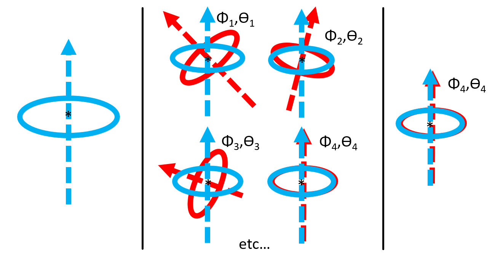

I am a senior/masters student at Cornell University studying electrical and computer engineering, set to graduate with my Bachelor of Science in December 2017. I am in the early admit program for a master of engineering degree at Cornell, graduating with my masters in May 2018. I grew up in Ithaca, NY. In my spare time I like playing basketball, guitar, listening to music, traveling, and dancing.
Click images to get linked to explanatory webpages!
Image registration/optical flow of 3D brain MRIs: fast calibration & transformation into standard space. Utilized convolutional neural networks on modern machine learning frameworks PyTorch and TensorFlow.
Project Goal
Currently, 3D image registration is done with an optimization process, which is slow. Because the database of brain MRI scans is so large, the transformations can be memorized by a machine given the shape of a given brain. The goal is to speed this process up with a convolutional nerual networks so the process becomes one step instead of iterative, speeding up the process.
Automated USPS driver monitoring for illegal/reckless driving using GPS data. Researched and wrote an image/signal processing program to recognize enemy radar chirps in electronic warfare.
Automated driver monitoring
Automated USPS driver monitoring for illegal/reckless driving using noisy GPS data. The program was designed to detect left turns and U-turns in the routes and map out their locations.
Cognitive radar classification
Researched and wrote an image/signal processing program to recognize enemy radar chirps in electronic warfare. The program receives a radar signal, transforms it into a spectrogram image, then filters that image and applies computer vision techniques to create recognizable features. A machine learning neural net then uses the processed image to classify incoming radar as different adversaries. Wrote and tested the program in C++ for industrial use after testing concepts in MATLAB.
Final projects for some my courses, demonstrated here with photos and video.
ECE 3140: Embedded Systems
The final project here was using the FRDM kinetis k64f to light up an LED display. The difficulty here involved programming the board to be able to transmit i2c signals.
ECE 3400: Robot Competition
In this class, a group of 8 students and I had a project of making a self navigating robot that could navigate a maze like that shown in the video below. The robot was able to send a radio signal of its current location as well as the location of an infrared emitter located on the maze.
ECE 4250: Super Resolution Imaging
For this project, our group took multiple images of my room, calibrated them, added them, and averaged them to obtain an image with more information than any single image. This was supported with some image SNR metrics. Here is a link to the presentation for more information.
Studying computer vision and algorithm optimization using the VisionX Computer Vision and Image Processing System with the end goal of recognizing tumors in CT scans of lungs and determining their coordinates. These programs were written using tools from the VisionX software and in C.
Identifying airways in lung CT scans and determining their orientation
This is one slice of a CT scan of the chest. The two darker lobes in the image are the lungs, and the white parts within them are mostly vessels and airways. These images were taken from The Cancer Imaging Archive [1]
This is a slice of a airway, zoomed in. The filled in circle is a blood vessel, and the hollow circle is an airway.
I am writing a program to differentiate between airways and air pockets, so that the overal program will be able to tell if the lung CT has air outiside of the airways and lung air sacs (alveoli). This diagram demonsrates what is meant by "orientation of an airway". Another program developed by the Vision and Image analysis group is able to point out locations of sphere shaped pockets of air within the lung, and their radii. Airways trigger this program and their locations are listed within the large list of locations of air pockets.An airway candidate can be determined by using moments analysis. Because a sphere intersecting with a cylinder (the assumed model of an airway) is a ring, this ring can be seen and interpreted by the program.

Canny edge detection in 3D
I wrote a program which has the purpose of creating a 3D boundary between two regions in a 3D image. This program takes in the gradient and performs non maximum suppression and thresholding with hysteresis on a 3D gradient file. This image is a slice of a noisy sphere generated using the VisionX software system for image processing and computer vision. On the left, a sphere added onto a background in a 3D image. In the center, that same sphere with added noise. One the right, the gradient magnitude of the image with added noise.
This image is a slice of the sphere, zoomed in, and demonstrating non maximum suppression to obtain a 1 pixel thick edge. On the left, the original image section, zoomed in. In the center, the same region after the applied non-maximum suppression. On the right, the image of the difference between the original and the image after the program (red pixels are the same as the original, green pixels have been removed by the program).
[1]The Cancer Imaging Archive (TCIA) citation
Clark K, Vendt B, Smith K, Freymann J, Kirby J, Koppel P, Moore S, Phillips S, Maffitt D, Pringle M, Tarbox L, Prior F. The Cancer Imaging Archive (TCIA): Maintaining and Operating a Public Information Repository, Journal of Digital Imaging, Volume 26, Number 6, December, 2013, pp 1045-1057.
[1]Data Citation
Grove, Olya, Berglund, Anders E., Schabath, Matthew B., Aerts, Hugo J.W.L., Dekker, Andre, Wang, Hua, … Gillies, Robert J. (2015). Data from: Quantitative computed tomographic descriptors associate tumor shape complexity and intratumor heterogeneity with prognosis in lung adenocarcinoma. The Cancer Imaging Archive. http://doi.org/10.7937/K9/TCIA.2015.A6V7JIWX
Helped Leidos develop their synthetic aperture and plenoptic processing capabilities. All projects were involving image processing in MATLAB.
Occlusion Penetrating Imaging
The goal of this image was to be able to take spy plane images, and track partially occluded targets. Taking multiple images of a scene, camera locations, and object
distance, this program will stitch together the scene behind the occluding object (often foliage) by overlaying the images with the pixel displacement to match the distance given and the camera positions. I tested this algorithm by taking images on my own cell phone of occluded scenes, and calibrating them to eliminate rotation or translational inaccuracies. I wrote the calibration and stitching programs in MATLAB.
Source images, after rotation and translational calibration to overcome the jitter that comes with acquiring these images on a cell phone.
This video focuses the images at a specific distance, by moving them on top of each other and averaging the pixel values. Partially occluded objects can be made out because they are usually not occluded in every single image. The "College Park" text and building become much more clear behind the bush. The displayed video is the overlayed images with the depth given at the top of the image in millimeters.
3D Point Cloud Generation
This program takes images of an object taken from different angles and generates a 3D model. It detects distance to every object in an image based on pixel disparity from multiple images of the object and known camera locations using stereo vision type range calculation with kernel matching. I wrote the function to discover pixel disparity using phase shift in the frequency domain.
Source images of a lego truck
Corresponding generated 3D point Cloud
This Website
Jan 2017 -
I wrote the code for this website in html/css/js. It is available for viewing on github.
Researched human balance while standing, walking, running, and turning using pressure sensitive force plates. The eventual goal of the project was to be able to understand how to make a walking robot by understanding how the center of mass of a human walking changed during the gait. Beginning to move in any direction was modeled after an upside-down pendulum, or inverse pendulum (before a person moved in any direction they would have to take a step in the opposite direciton to cause them to lean in the direction they would like to move in).
This program in MATLAB that read the data and created scatter plots to model where the feet were on the force plate over time. In this particular trial, the person was instructed to run right. Before running right, the person leans left, which follows the inverse pendulum model.
Click courses to see descriptions.
All descriptions come from the classes.cornell.edu webpage. The images are pulled from the homeworks and labs of the courses.
First course in electrical circuits and electronics. Establishes the fundamental properties of circuits with application to modern electronics. Topics include circuit analysis methods, operational amplifiers, basic filter circuits, and elementary transistor principles. The laboratory experiments are coupled closely with the lectures.
Introduction to signal processing. Topics include frequency-based representations: Fourier analysis and synthesis; discrete time linear systems: input/output relationships, filtering, spectral response; analog-to-digital and digital-to-analog conversion; continuous time signals and linear time invariant systems: frequency response and continuous-time Fourier transform.
This course provides an introduction to the design and implementation of digital circuits and microprocessors. Topics include transistor network design, Boolean algebra, combinational circuits, sequential circuits, finite state machine design, processor pipelines, and memory hierarchy. Design methodology using both discrete components and hardware description languages is covered in the laboratory portion of the course.
Introduction to probabilistic techniques for modeling random phenomena and making estimates, inferences, predictions, and engineering decisions in the presence of chance and uncertainty. Probability measures, classical probability and combinatorics, countable and uncountable sample spaces, random variables, probability mass functions, probability density functions, cumulative distribution functions, important discrete and continuous distributions, functions of random variables including moments, independence and correlation, conditional probability, Total Probability and Bayes' rule with application to random system response to random signals, characteristic functions and sums of random variables, the multivariate Normal distribution, maximum likelihood and maximum a posteriori estimation, Neyman-Pearson and Bayesian statistical hypothesis testing, Monte Carlo simulation. Applications in communications, networking, circuit design, device modeling, and computer engineering.
An introduction to the design of embedded systems, with an emphasis on understanding the interaction between hardware, software, and the physical world. Topics covered include assembly language programming, interrupts, I/O, concurrency management, scheduling, resource management, and real-time constraints.
This is a comprehensive undergraduate level course on microelectronics. Topics covered include basic semiconductor physics, electrons and holes in semiconductors, electrical transport in semiconductors, PN junctions and diodes, photodetectors and solar cells, Metal-Oxide-Semiconductor (MOS) capacitors, MOS field effect transistors (FETs), bipolar junction transistors (BJTs), large signal and small signal models of electronic devices, single stage amplifiers, multistage amplifiers, differential amplifiers, analog circuit analysis and design, high-frequency models of devices, high-frequency circuit analysis, digital logic and MOS logic devices, complimentary MOS (or CMOS) logic gates, fundamental trade-offs in high speed analog and digital circuit design. The coursework includes labs and a final project.
Course aims to deepen students' working knowledge of mathematical tools relevant to ECE applications. While the course emphasizes fundamentals, it also provides an ECE context for the topics it covers, which include foundational material about sets and functions; modular arithmetic and public-key cryptography; inner products, orthogonal representations, and Fourier analysis; LTI systems as mappings on function spaces; sampling and interpolation; singular-value decomposition; and, as time permits, an introduction to wavelets and elementary convex analysis.
A brief history of electrical and computer engineering, the core subjects that define the field today, the ethical standards of its practice, and instruction in the elements of the process of designing electrical devices and systems. Students engage in experiential-learning design projects in which they will use the design process strategies to function well on a team and to design a system that meets customer needs and electrical engineering constraints.
In this class, a group of 8 students and I had a project of making a self navigating robot that could navigate a maze like that shown in the video below. The robot was able to send a radio signal of its current location as well as the location of an infrared emitter located on the maze.
Introduces statistical signal processing. Signal representation and manipulation are covered via correlation and using the DFT/FFT to estimate other transforms; applications of these topics are then covered, including quantization, quantization effects in digital filters, multirate DSP, filter banks, delta-sigma modulation, power spectrum estimation, and introductions to Wiener and Kalman filtering and image processing.
Introduction to the operation, physics, and application of lasers. The course covers diffraction-limited optics, Gaussian beams, optical resonators, the interaction of radiation with matter, stimulated emission, rate equations, and laser design. Examples of coherent radiation to nonlinear optics, communication, and leading-edge research are frequently used. Course concludes with a lab where students design and then build a laser.
The course will be devoted to understanding, implementation, and applications of various machine learning primitives. We will cover several unsupervised, and supervised learning techniques. Supervised learning includes regression, support vector machines, decision trees, random forests, naïve bayes, boosting and bagging. Unsupervised learning includes clustering, k-means, k-NN, principal components analysis and other dimensionality reduction methods. We will also cover Mixture of Gaussians, the EM algorithm, and the Viterbi algorithm. We will give particular emphasis on applications in ECE, e.g., text data, hand-writing, music, image, and time series data, and categorical datasets such those in recommendation systems. The course will have a programming component, which will be administered in the form of assignments, or in-class-kaggle competitions.
Covers computer acquisition and analysis of image data with emphasis on techniques for robot vision. Concentrates on descriptions of objects at three levels of abstraction: segmented images (images organized into subimages that are likely to correspond to interesting objects), geometric structures (quantitative models of image and world structures), and relational structures (complex symbolic descriptions of images and world structures). The programming of several computer-vision algorithms is required.
Programming and problem solving using MATLAB. Emphasizes the systematic development of algorithms and programs. Topics include iteration, functions, arrays, recursion, object-oriented programming, and MATLAB graphics. Assignments are designed to build an appreciation for complexity, dimension, fuzzy data, inexact arithmetic, randomness, simulation, and the role of approximation.
Intermediate programming in a high-level language and introduction to computer science. Topics include program structure and organization, object-oriented programming (classes, objects, types, sub-typing), graphical user interfaces, algorithm analysis (asymptotic complexity, big "O" notation), recursion, data structures (lists, trees, stacks, queues, heaps, search trees, hash tables, graphs), graph algorithms. Java is the principal programming language.
Covers the mathematics that underlies most of computer science. Topics include mathematical induction; logical proof; propositional and predicate calculus; combinatorics and discrete mathematics; some basic elements of basic probability theory; basic number theory; sets, functions, and relations; graphs; and finite-state machines. These topics are discussed in the context of applications to many areas of computer science, such as the RSA cryptosystem and web searching.
Develops techniques used in the design and analysis of algorithms, with an emphasis on problems arising in computing applications. Example applications are drawn from systems and networks, artificial intelligence, computer vision, data mining, and computational biology. This course covers four major algorithm design techniques (greedy algorithms, divide-and-conquer, dynamic programming, and network flow), undecidability and NP-completeness, and algorithmic techniques for intractable problems (including identification of structured special cases , approximation algorithms, local search heuristics, and online algorithms).
One dynamic program I wrote for the class is here: